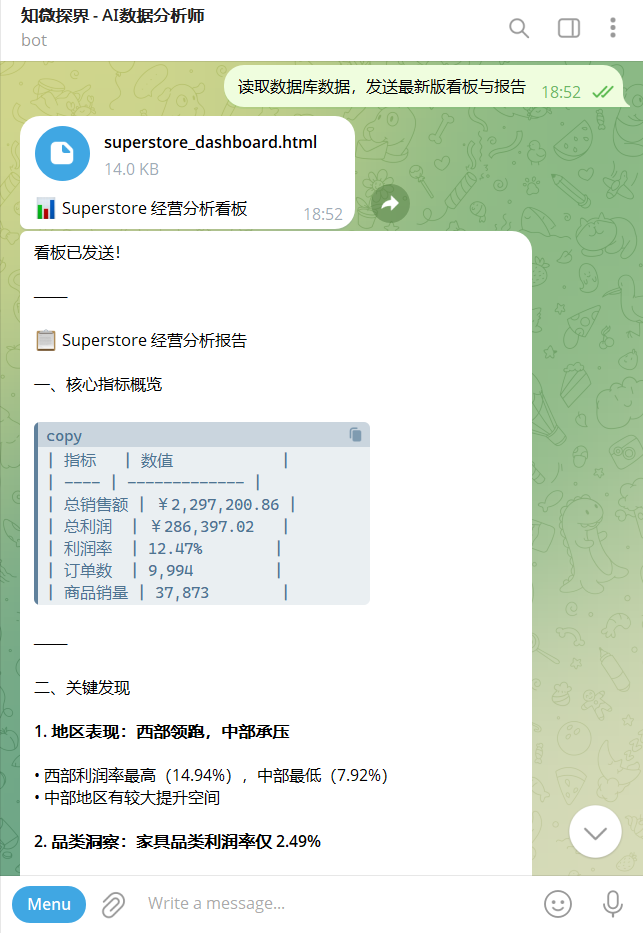
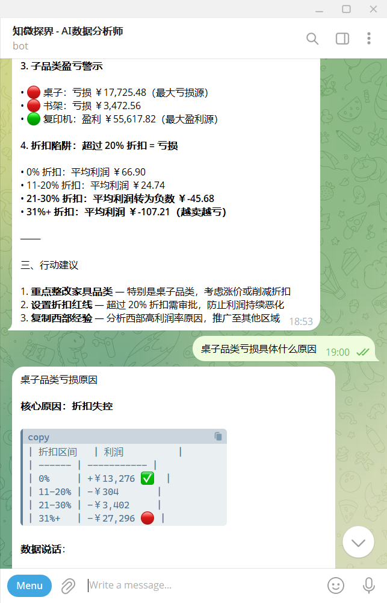
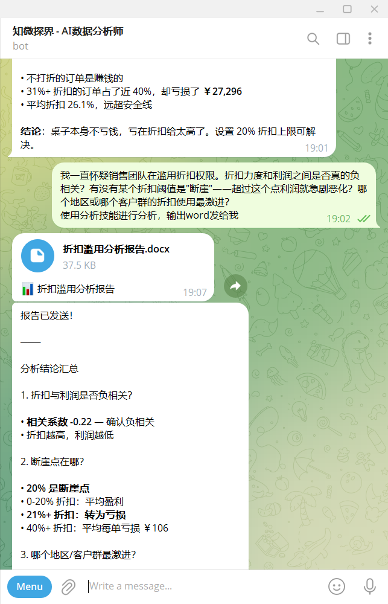

打破数据孤岛与分析时滞。我们将静态的报表汇报，重塑为流动的智能洞察。
让每一次经营决策，都拥有深度的财务逻辑与数据穿透。
痛点：管理者往往在“找数据”上耗费精力，依赖人工制作层层递交的静态报表。当看到结论时，最佳决策窗口往往已经关闭，响应时滞极大。
破局：由 AI 取代繁琐的整合工作，24 小时全量扫描底层业务流，自动完成多源数据的实时聚合与多维透视。
价值：每天清晨，浓缩的经营早报与可视化看板主动推送至桌面。将静态汇报转化为流动的洞察，真正实现从“人找数”变为“结论找人”。


痛点：面对报表上的利润洼地，经验判断往往带有偏差。若要拉取明细或层层向下属追问，沟通成本极高，且难以抓准真实原因。
破局：只需向 AI 发起实时追问，模型即刻下钻多重维度（如地区、折扣率区间），在一秒内层层剥离出“亏损黑盒”中的内核原因。
价值：不只停留在浅层展示数据，而是直接穿透至“折扣失控”等具体业务动作，并给出可执行的干预建议，实现跨越层级的即时诊断。
痛点：战略决策常依赖模糊的“业务直觉”，其量化验证往往需要分析师耗费数天测算；且零散的对话记录难以形成高规格的正式文件供决策层流转。
破局：我们将专业级别的财务与风控逻辑深度嵌入 AI。面对复杂假设，系统自动调用相关性分析与断崖点检测等高级算法，进行深度的量化验证。
价值：一键从海量运算中生成逻辑严密、排版专业的《数据分析报告》，立刻将直觉转化为管理红线，为您交付实打实的战略级决断依据。

本地化算力部署 · 敏感数据自动脱敏 · 核心业务不出厂
基于 9,994 笔交易数据的利润源泉重估与破局路径解码
本报告围绕三个核心战略问题展开深度数据分析。总体而言，SuperStore 的整体经营存在明显的结构性矛盾：公司在追求规模的同时，部分业务正在系统性地消耗利润。数据显示，三大问题相互关联，根源在于折扣政策失控与品类战略错位。
公司长期将销售额作为核心考核指标，但销售额的增长并不总是转化为利润。
| 品类 | 总销售额 | 总利润 | 利润率 | 评估 |
|---|---|---|---|---|
| 科技类 | $836,154 | $145,455 | 17.4% | 核心利润来源 |
| 办公用品类 | $719,047 | $122,491 | 17.0% | 高效稳定 |
| 家具类 | $741,999 | $18,451 | 2.5% | 规模大但低效 |
分析：家具类虽然贡献了约 $742K 的销售额，但利润率极低，几乎处于盈亏平衡线，不仅不赚钱，还占用了大量物流与仓储资源。
当我们穿透品类看子品类时，问题变得更加尖锐。以下三个子品类的销售额均不低，但全部处于亏损状态：
| 子品类 | 所属品类 | 总销售额 | 总利润 | 利润率 | 订单数 |
|---|---|---|---|---|---|
| 桌子 | 家具类 | $206,966 | -$17,725 | -8.6% | 319 |
| 书柜 | 家具类 | $114,880 | -$3,473 | -3.0% | 228 |
| 耗材 | 办公用品类 | $46,674 | -$1,189 | -2.5% | 190 |
桌子子品类每产生 $1 销售额实际亏损 8.6 分。这不是边际问题，而是结构性定价或成本问题。319 笔订单意味着我们正在系统性地、重复性地亏钱。
与此形成鲜明对比的是利润率最高的子品类：
| 子品类 | 所属品类 | 总销售额 | 总利润 | 利润率 |
|---|---|---|---|---|
| 标签 | 办公用品类 | $12,486 | $5,546 | 44.4% |
| 纸张 | 办公用品类 | $78,479 | $34,054 | 43.4% |
| 信封 | 办公用品类 | $16,476 | $6,964 | 42.3% |
| 复印机 | 科技类 | $149,528 | $55,618 | 37.2% |
| 配件 | 科技类 | $167,380 | $41,937 | 25.1% |
值得注意的是，机器设备（科技品类，$189K 销售额）的利润率只有 1.79% —— 虽然没有亏损，但几乎不创造价值，且每笔订单金额巨大，资金占用成本不容忽视。
长期以来，我怀疑销售团队在过度使用折扣权限。给客户折扣是为了促成交易，但如果折扣本身导致亏损，那这笔交易就没有意义。数据现在给出了明确答案。
| 折扣区间 | 订单数 | 总利润 | 平均单笔利润 | 利润率 | 判断 |
|---|---|---|---|---|---|
| 0% (无折扣) | 4,798 | $320,988 | $66.90 | 29.5% | 强盈利 |
| 1-10% | 94 | $9,029 | $96.06 | 16.6% | 尚可 |
| 11-20% | 3,709 | $91,756 | $24.74 | 11.6% | 警惕 |
| 21-30% | 227 | -$10,369 | -$45.68 | -10.1% | 亏损 |
| 31-40% | 233 | -$25,448 | -$109.22 | -19.4% | 严重亏损 |
| 41%+ | 933 | -$99,559 | -$106.71 | -77.4% | 灾难性亏损 |
📌 核心发现： 折扣超过 20% 是明确的盈利断崖。无折扣订单的利润率高达 29.5%，而 20% 以上折扣的订单全部陷入亏损。1,393 笔高折扣订单合计亏损超过 $135,000，几乎抵消了公司近半的利润。
更令人担忧的是，41% 以上的超高折扣订单共 933 笔，平均每笔亏损 $106.71，合计亏损近 $100,000。这些订单究竟是谁批准的？依据是什么？
| 地区 | 平均折扣率 | 超 20%折扣订单占比 | 整体利润率 | 评估 |
|---|---|---|---|---|
| 中部地区 | 24.0% | 27.7% | 7.9% | 问题最严重 |
| 南部地区 | 14.7% | 10.6% | 11.9% | 中等风险 |
| 东部地区 | 14.5% | 16.2% | 13.5% | 偏高 |
| 西部地区 | 10.9% | 3.7% | 14.9% | 相对健康 |
中部地区的问题触目惊心：平均折扣高达 24%，近三成订单折扣超过 20%，导致整体利润率只有 7.9%，仅为西部地区的一半。这不是市场竞争环境造成的，而是折扣纪律崩溃的结果。
| 品类 | 平均折扣率 | 超 20%折扣订单占比 | 整体利润率 |
|---|---|---|---|
| 家具类 | 17.4% | 25.6% | 2.5% |
| 办公用品类 | 15.7% | 11.3% | 17.0% |
| 科技类 | 13.2% | 9.3% | 17.4% |
家具品类同时面临两个困境：产品本身利润率低，同时折扣使用率最高。25.6% 的家具订单折扣超过 20%，这两个问题叠加，导致家具品类的利润率被压缩到仅 2.5%。这绝非偶然，而是系统性问题。
我们的销售团队长期重视 企业客户，认为其订单金额大、关系稳定，是优质客户群。消费者 群体体量最大，但我一直怀疑其价值被高估了。数据揭示了一个出乎意料的结论。
| 客户细分 | 订单数 | 平均订单金额 | 总销售额 | 总利润 | 利润率 | 平均折扣 |
|---|---|---|---|---|---|---|
| 家庭办公 | 1,783 | $241 | $429,653 | $60,299 | 14.0% | 14.7% |
| 企业客户 | 3,020 | $234 | $706,146 | $91,979 | 13.0% | 15.8% |
| 消费者 | 5,191 | $224 | $1,161,401 | $134,119 | 11.5% | 15.8% |
💡 反直觉发现： 家庭办公客户群虽然体量最小，利润率却最高（14.0%）。消费者群体订单量最多，但利润率最低（11.5%）。我们的资源配置可能长期以来存在错误的优先级。
家具品类在所有三类客户中都是利润率最低的业务，消费者 购买家具的利润率仅 1.8%。值得注意的是，家庭办公 客户购买 办公用品类 的利润率高达 20.8%，是所有细分中最高的。
| 客户细分 | 地区 | 总利润 | 利润率 | 备注 |
|---|---|---|---|---|
| 家庭办公 | 东部 | $26,709 | 21.0% | 最高利润率组合 |
| 消费者 | 西部 | $57,451 | 15.8% | 规模最大且健康 |
| 家庭办公 | 南部 | $4,621 | 6.2% | 低效 |
东部区的家庭办公客户利润率高达 21.0%，是所有细分组合中最高的。然而，从销售团队的关注度和资源投入来看，这个群体很可能是最被忽视的。
三个问题的数据分析最终指向同一个核心矛盾：公司在追求规模和市场覆盖的过程中，系统性地牺牲了利润质量。以下是我认为优先级最高的五项行动：
| 优先级 | 行动项 | 时间框架 | 预期影响 |
|---|---|---|---|
| 优先级一 | 立即启动折扣审批分级制度，20% 为硬性红线，超出须逐级审批 | 30 天内 | 高 |
| 优先级二 | 对桌子、书柜品类进行定价重审，考虑退出或大幅提价 | 60 天内 | 高 |
| 优先级三 | 对中部地区进行折扣使用专项审计，追责并重建规则 | 45 天内 | 中 |
| 优先级四 | 制定家庭办公客户专属增长计划，尤其聚焦东部地区 | 季度内 | 中 |
| 优先级五 | 将子品类利润率纳入销售团队关键绩效指标，与折扣权限直接挂钩 | 季度内 | 中 |
数据支持一个明确结论：当前的问题不是市场机会不足，而是内部执行纪律不足。折扣失控、品类错配、客户优先级误判——这三个问题都有数据可查、可量化，也都有对应的管理解决方案。
下一步需要的是 执行意志，而不是更多分析。